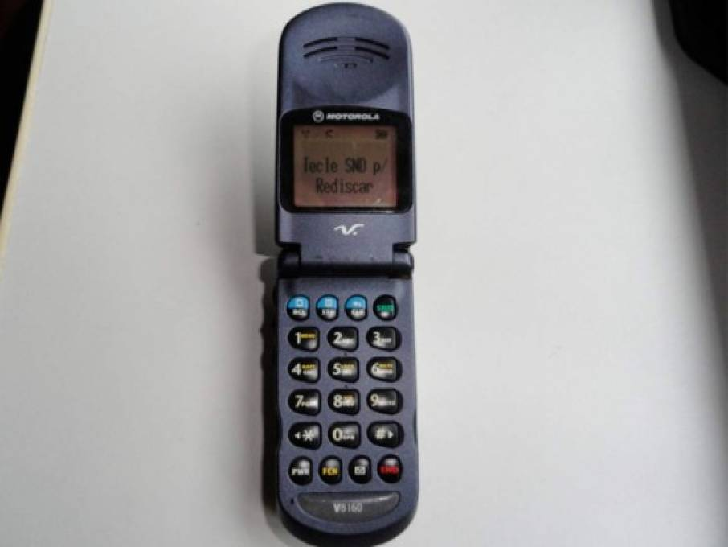

El celular es un importante medio de comunicación porque permite conectar de manera inmediata y entre puntos remotos,a traves de la conexión de servicio de telefonía o de Internet inalanbrica.
El celular movil es un dispositivo electrónico que permite comunicarse mediante diversas herramientas:vía telefonica,a traves de aplicaciones,de correos electrónicos,entre otro.
Información del Celular
Los Celulares y el Acceso al Internet
Acceder a datos de geolocalización
Los celulares permiten consultar mapas a través del sistema GPS o buscar datos específicos de geolocalización de lugares o ubicaciones de personas que poseen otro dispositivo.
Comunicar y compartir datos mediante chats.
Permiten enviar mensajes breves, datos, audios y archivos, de manera instantánea y sin disponer de una conexión de telefonía
Ventajas
Privacidad
Con la invención de los teléfonos inteligentes, no tiene que preocuparse de que los miembros de la familia descubran sus mensajes y cartas de amor. Los teléfonos inteligentes le permiten almacenar y proteger esta información. La mayoría de los teléfonos inteligentes están diseñados con un sistema de bloqueo de teléfono. Puede usar un PIN, un código o incluso su huella digital para bloquear su teléfono. Se evita que las personas merodeen a través de sus mensajes privados. Solo debes asegurarte de que no conozcan tu contraseña mediante el uso de un código único.
Mantente en contacto fácilmente
Tus amigos y familiares están a un mensaje de distancia. Si tiene una emergencia, puede enviar un mensaje de texto a alguien y pedir ayuda. Puede viajar por el mundo y aún así conectarse con su familia usando teléfonos inteligentes. Les envías fotos y videos para que se sientan parte de tu vida. Los teléfonos inteligentes ayudan a acortar la distancia entre las personas.
Resumen Ventajas
Privacidad
Mantente en contacto fácilmente
Fácil acceso a su correo electrónico, redes sociales
Termina muchas tareas más fácilmente
Entretenimiento
Desventajas
Privacidad en peligro
Si le roban el teléfono, la información ya no será privada. Es muy importante que bloquee su teléfono y lo desactive. Puede informarle a su proveedor de servicios que su teléfono se perdió y éste se desactivará. Usamos nuestros teléfonos para realizar transacciones en línea y, a veces, esta información se guarda. Si no tiene cuidado, es posible que alguien pueda acceder a su información personal. Podría ser alguien cercano que tenga acceso a su teléfono. Debes tener cuidado.
Distracción
Puede distraerse fácilmente con un teléfono inteligente. Hay que tener cuidado porque pueden ocurrir accidentes. Si está conduciendo, guarde el teléfono y concéntrese. Lo que sea que esté en su teléfono inteligente puede esperar hasta que esté en casa. No arriesgue su vida con estos dispositivos portátiles. La etiqueta social es otra preocupación. Muchas organizaciones solicitarán un uso mínimo de teléfonos celulares. Las personas tienden a perder la concentración cuando escuchan que suena un teléfono y alguien sale para atender la llamada. Si está en una reunión importante, recuerde poner su teléfono en silencio. Además, puede ser una falta de respeto cuando alguien está hablando contigo y estás prestando más atención a tu teléfono.
Resumen Desventajas
Privacidad en peligro
Distracción
Los problemas de salud
Adicción

Los primeros teléfonos
La telefonía celular se ha convertido en los últimos años en la principal tecnología utilizada por millones de personas en todo el mundo.
Casi treinta años de constante evolución en las comunicaciones han permitido considerar estos dispositivos como algo imprescindible.
En lo relacionado con las tecnologías y la comunicación, tanto internet como los teléfonos celulares han pasado a ser los elementos más requeridos en la vida social de cualquier persona. Es por ello que hoy no solo podemos comunicarnos de forma convencional como lo hacíamos hace 15 años, sino que los celulares nos brindan la posibilidad de conocer y experimentar los populares mensajes de texto y los mensajes multimedia, las videollamadas en vivo, etc.
Los inicios de la telefonía celular
Sin embargo, en aquellos principios de la telefonía móvil, la respuesta de los consumidores no fue del todo satisfactoria. Esto principalmente se debía al exagerado tamaño y peso de los primeros equipos de telefonía celular y, por supuesto, al elevado valor que poseían los aparatos, que estaban más allá de las posibilidades económicas de la clase social media norteamericana.